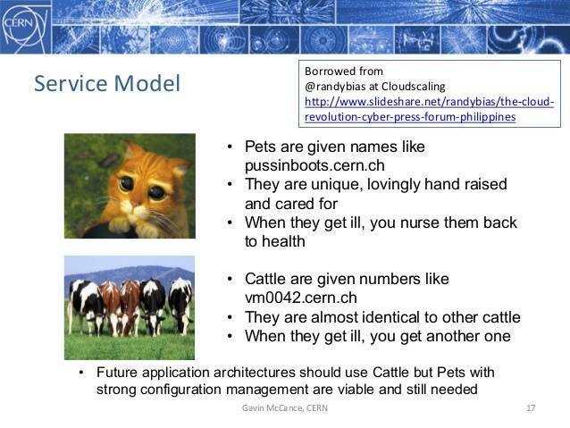

Pets vs Cattle 历史以及如何正确类比
Table of Contents

一直以来对服务宠物和牛（家畜）的说法不太理解，以为只是简单意义上的有状态服务和无状态服务的类比。好比 Kubernetes 中 StatefulSet 对应 Pets，Deployment 对应 Cattle。后来看到 Randy Bias 的这篇文章 The History of Pets vs Cattle and How to Use the Analogy Properly，才知道完全不是这一回事。文中还不忘怼了一下 Kubernetes 官方博文中把有状态服务形容为 Pets，我想 K8s 1.5 之后把 PetSet 改名为 StatefulSet 与这篇文章是有关联的。个人觉得这是一篇很有意思的文章，索性就翻译了一下，有些翻译可能有些生涩，英文好的建议直接看原文。
以下为译文：
我想写这篇文章已经很长一段时间了，但有些事正在发生变化。对我来说，提供一个准确的历史，定义和正确使用 Pets vs Cattle 模因这很重要。这样每个人就可以理解它为什么会成功，并且它如何作为推动理解云的工具仍然至关重要。这个模因已经起飞，因为它帮助创立了对处事方式新旧的理解。这很好，但是当被误用时，模因的价值就变得混乱。我们都认为这儿已经有足够多的泥泞术语和措辞，比如 "云"，"混合云" 和 "DevOps"。因此本文旨在直接了当的阐述，并确保一个可以被任何人参考和使用的规范历史。
1 历史
在 2011 年或者 2012 年的某个时候，我一直在努力向客户解释 AWS，云原生应用以及云和以往的情况彻底不同，大多数解释都要花费很多时间。当我遇到 Bill Bake 关于 Scaling SQL Server 一个很棒的演示时，我正在寻找一种方法来概括这一点。Bill 没有在云的范畴中表达，我是通过 Google 搜索找到了它，Bill
不是在谈论云或者云计算，他的重心是 scale-up 和 scale-out 架构上。
最重要的是，Bill 使用了一个与我产生共鸣的类比。在讨论 scale-up 和 scale-out 时，他拿一只宠物和牛作为比较。我灵光一闪，我意识到就是它了。但是这儿有一个细微但重要的差别，首先我把宠物和牛放在云的背景下，其次我是强调牛的可替代性和宠物的独特性。这可比 scale-up 和 scale-out 要重要的多。我相信这会影响你如何看待一个服务器。如果你认为服务器（不管是金属的，虚拟化或者容器化）可以随时销毁和替代，那么它是牛群中的一员。但是，如果你将服务器（或者试图让一组服务器作为一个独立单元出现），那么它就是宠物。
这是我在演讲中给出的，几乎是逐字逐句的：
在旧的处事方式中，我们把我们的服务器当作是宠物，例如 Bob 邮件服务器，如果 Bob 宕机了，那么就束手无措了。CEO 将无法收到他的邮件，这简直是世界末日。在新的处事方式上，服务器被编好号，就像牛在牛群中。比如，www001 到 www100。当一个服务器宕机了，它将会被取出替换上线。
这个对宠物和牛的解释引起了 欧洲核子研究中心的蒂姆贝尔 和其他人的共鸣，他们引用并传播了这一类比。这创造了一个如此多化的模因，并且异常清晰地代表了我们正往云的过渡。
2 弄清楚宠物和牛
让我们花一点时间来清楚地定义宠物和牛。
2.1 宠物
服务器或服务器对，被视为永不停机的必不可少或独特的系统。通常，它们是手动构建、管理和"手喂"。例如包括大型机，独立服务器，HA 负载均衡或者防火墙（双活或者主备），主从（主备）设计的数据库系统等等
2.2 牛
两个以上服务器的阵列，使用自动化工具构建，专为故障而设计，其中没有一个，两个甚至三个服务器是不可替代的。通常，在故障事件期间不需要人为干预，因为阵列通过重新启动故障服务器或通过三重复制或擦除编码等策略复制数据来展示"绕故障路由"的属性。例如 Web 服务器阵列，多主数据存储（如 Cassandra 集群），以及几乎任何负载均衡和多主机。
这里的关键点是，在旧世界中，企业中心通过冗余，普及的高可用对是不够的。所需要的是，允许失败发生。确保每个服务器，每个组件都能够在不影响系统的情况下发生故障。
最重要的是，如上所述，这种类比有助于教育一代 IT 经理，CIO 们和其他人，同时为他们提供进一步解释新旧的工具。
3 去农场
这就是为什么坚持或至少从上面的核心信息开始是很重要的。人们可以并且能够，通过这个简单的类比将其转化为他们自己的用途。相关人员已经加入的类比（例如"宠物，牛，蚂蚁"，"儿童，宠物和牛"等），并以各种方式对其进行了修改。这很好，但它经常会混淆原意，这意味着它降低了价值。以下是最近的一个案例。
Kubernetes 团队今年在夏天借用了这个类比解释了他们为 Kubernetes 添加了 "Pet sets" 功能，并发布了一篇题为 Stateful Applications in Containers!? Kubernetes 1.3 Says "Yes!" 的博客。可以理解的是，容器生态的人们会使用 Pets vs Cattle ，并将其解释为有状态应用。容器适用于有状态的应用，这我个人不太清楚，可能容器生态支持持久性存储还不太好。相当多的人一直在寻找解决这个问题，包括 Rex-Ray
项目。无论怎么说，这是一个很长的话题。
K8s 博文中的核心问题是，如果你看一下使用 Pet Sets 在 kubernetes 1.3 中支持的有状态应用程序的例子，它就是一个 Cattle 架构数据存储系统："Cassandra, Kafka, MongoDB"。所有的这些数据存储系统都是针对故障设计的，并且完全符合我上述对 Cattle 的定义。换句话说，Kubernetes 现在使用所谓的 "Pet Sets" 支持 Cattle 数据存储。
当然，问题在于这暗示使用 Pet Sets 支持真正的 Pet 架构系统，例如主备 Oracle 存储系统或 HA NFS 文件服务器对。虽然这里有一些步骤可以帮助实现这一个目标（例如，支持有序的主从系统），但是 Pet Sets 确实是针对横向扩展数据存储，而不是上文定义的真正的宠物。
这很重要，如果我们说宠物是关于需要特殊处理的系统而不是不能失败的系统，那么我们最终会误导那些试图理解新旧方式的人。
4 从 Pets vs Cattle 获取价值
做你想要去做的事情。如果觉得需要通过 Pets vs Cattle 并利用它用于营销或者其它目的，那是你的特权。只需要了解它最初是如何使用的，以及为什么它在快速帮助 IT 和管理人员快速了解已发生变化的情况下仍具有无可估量性。如果你只是确认提供在新的背景下以及提及这个模因的真实历史博文，我也会非常感激。
最终，专注于服务器的可替换性 – 实际上是 Google 开创性的概念，是 Pets vs Cattle 最重要的点。失去它关注于其它方面，或归于非预期的东西（如有状态应用程序作为 Pets）干扰混淆原意。
通过理解并准确地表达模因的起源，我们维护其价值，帮助了解计算机交付方式的基础转变。